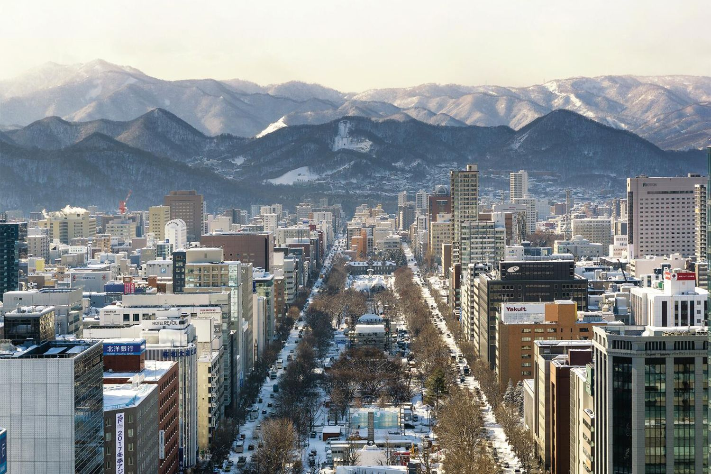
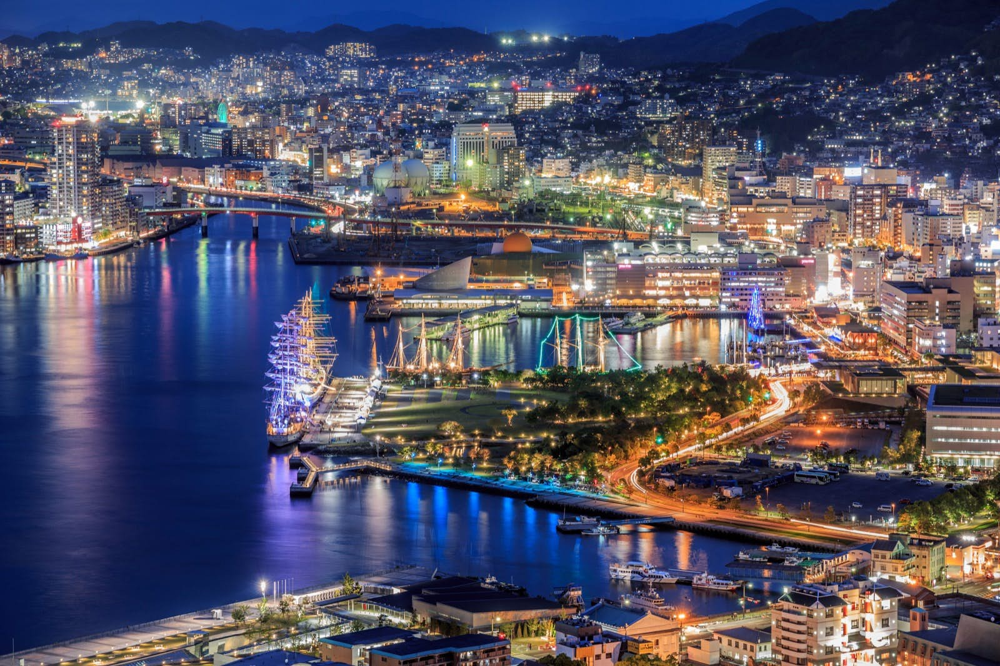
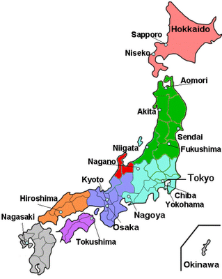

~GALLERY~
In this page, I would like to share my favourite country that I wish to visit in future which is Japan where it known with their popular place disctrict which are:
| District |
Picture of location |
Description |
Tokyo |

|
Tokyo, formerly (until 1868) Edo, city and capital of Tokyo to (metropolis) and of Japan. It is located at the head of Tokyo Bay on the Pacific coast of central Honshu. It is the focus of the vast metropolitan area often called Greater Tokyo, the largest urban and industrial agglomeration in Japan. |
Kyoto |

|
Kyōto, City (pop., 2020: 1,463,723), west-central Honshu, Japan. It is situated northeast of Ōsaka, and together with Kōbe it is part of a major urban-industrial region.The centre of Japanese culture and Japanese Buddhism, Kyōto (“Capital City”) was the capital of Japan and the site of the imperial family residence for more than 1,000 years (794 until 1868). |
Hokkaido |

|
Hokkaido, northernmost of the four main islands of Japan. It is bordered by the Sea of Japan (East Sea) to the west, the Sea of Okhotsk to the north, and the Pacific Ocean to the east and south. Hokkaido province comprises about one-fifth of Japan’s total land area. It is characterized by a cool climate and geologically recent mountains and volcanoes along a central north-south spine. |
Nagasaki |

|
Nagasaki (Japanese: 長崎, IPA: [naɡaꜜsaki]; lit. "Long Cape") is the capital and the largest city of Nagasaki Prefecture on the island of Kyushu in Japan. It became the sole port used for trade with the Portuguese and Dutch during the 16th through 19th centuries. |
Japan was a country at the ranked of the eleventh most populous country in the world, as well as one of the most densely populated and urbanized. About three-fourths of the country's terrain is mountainous, concentrating its population of 123.2 million on narrow coastal plains. Japan is divided into 47 administrative prefectures and eight traditional regions. The Greater Tokyo Area is the most populous metropolitan area in the world, with more than 35.6 million residents.
Not only than that, it popular known because of Japan (Japanese: 日本, Nippon or Nihon,[nb 1] and formally 日本国, Nihonkoku) is an island country in East Asia. It is situated in the northwest Pacific Ocean, and is bordered on the west by the Sea of Japan, while extending from the Sea of Okhotsk in the north toward the East China Sea, Philippine Sea, and Taiwan in the south. Japan is a part of the Ring of Fire, and spans an archipelago of 6852 islands covering 377,975 square kilometers (145,937 sq mi); the five main islands are Hokkaido, Honshu (the "mainland"), Shikoku, Kyushu, and Okinawa. Tokyo is the nation's capital and largest city, followed by Yokohama, Osaka, Nagoya, Sapporo, Fukuoka, Kobe, and Kyoto. Map below shows a map in Japan.
However, you may click the image mapping below on Tokyo, Kyoto, Hokkaido, and Nagasaki, part which consist of my favourite disctrict for more details so that you can explore their culture, food, environment, and many more on another page.

SHORT VIDEO FOR MY FAVOURITE DISTRICT:
~Hokkaido~
Back to the Gallery
UPDATED JANUARY - copyright Halili Che Ayub 2023
{kind=link}
{kind=link}